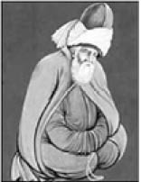
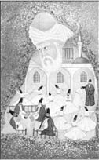

Mevlâna Celaleddin Rumi
Mevlâna Celaleddin Rumi (1207-1273)
“Sevgide güneş gibi ol, dostluk ve kardeşlikte akarsu gibi ol, hataları örtmede gece gibi ol, tevazuda toprak gibi ol, öfkede ölü gibi ol, her ne olursan ol, ya olduğun gibi görün, ya göründüğün gibi ol.”
Babası Sultânü’l-Ulemâ (Bilginlerin Sultanı) Bahaeddin Veled, annesi Belh Emiri Rükneddin’in kızı Mümine Hatun’dur. 30 Eylül 1207 tarihinde Horasan yöresinde (bugün Afganistan sınırları içerisinde yer alan), Belh şehrinde doğmuştur.
Yaklaşmakta olan Moğol istilası nedeniyle Belh’ten ayrılmak zorunda kalan Mevlâna ve ailesi Nişâbur, Bağdat, Kûfe yolu ile Kâbe’ye giderek Hac ibadetini yerine getirdikten sonra Şam, Malatya, Erzincan, Sivas, Kayseri, Niğde yolu ile Karaman’a gelerek buradaki bir medreseye yerleşirler. Burada yedi yıl kalırlar ve bu süre içinde Mevlâna evlenir.
Bu dönemde Anadolu’nun büyük bir kısmına hâkim olan Selçuklu Devleti en parlak devrini yaşıyordu. Hükümdar Alâeddin Keykubad devletin başkenti Konya’yı sanat, ilim ve kültür merkezi hâline getirmişti. Sanatkâr ve ilim adamlarını Konya’da toplamış olan Alâeddin Keyku-bad, Mevlâna’nın babası Bahaeddin Veled’i de başkentine davet eder ve burada kendisine bir medrese tahsis eder.
Babasının 1231 yılında vefatı üzerine, onun varisi olarak görülmüş ve babasının öğrencileri Mevlâna’nın çevresinde toplanmıştır.
Mevlâna bir gün öğrencileriyle birlikte yürürken yol kenarında bulunan köpeklerin birbirlerine sarılarak uyuduğunu gören öğrencilerden biri duygulu bir şekilde,
“Ne kadar güzel bir kardeşlik örneği gösteriyorlar” der, “Keşke tüm insanlık bunu görse de ders alsa”.
Mevlâna öğrencilerine görünen manzaranın farklı bir açısını anlatmak için:
“Aralarına bir kemik atarak kardeşliklerinin derecesini daha iyi anlayabiliriz” der.
Mevlâna bir gün musiki konusunda sohbet etmektedir. “Ney sesini işitince sanki cennet kapılarının açılış sesini işitiyor gibi oluyorum” deyince mecliste bulunanlardan biri “Ben de aynı sesleri duyar gibi oluyorum” der.
Bunun üzerine o adamı çok iyi tanıyan yakın bir arkadaşı “Senin duyduğun o ses” der, “Kapıların kapanış sesleridir”.
Mevlâna’nın babası öldüğünde Selçuklu Sarayı’nın Gül Bahçesi’ne defnedilmişti. Sultânü’l-Ulemâ’nın mezarının üzerine bir türbe yaptırmak isteyenler Mevlâna’ya başvurduklarında “Gök kubbeden daha iyi türbe mi olur?” cevabını almışlardı.
Mevlâna, 17 Aralık 1273 tarihinde vefat etti. Sevdiklerinin isteği üzerine oğlu Sultan Veled, Mevlâna’nın mezarı üzerine türbe yapılmasını kabul etmiştir.
19. yüzyılın sonuna kadar eklemeleri devam eden türbede bulunan iki levha Mevlâna’nın felsefesini ve düşünce sistemini en iyi şekilde ifade eder. Türkçe olan birinci levhada şöyle yazar:
“Ya olduğun gibi görün, Ya göründüğün gibi ol.”
Mevlâna’nın Farsça bir rubaisi olan ikinci levhanın çevirisi ise şöyledir:
“Gel, Gel, ne olursan ol, gel! ister kâfir, ister mecûsî, ister puta tapan ol, gel! Bizim dergâhımız ümitsizlik dergâhı değildir. Yüz kere tövbeni bozmuş olsan da yine gel!”
Ölüm gününü yeniden doğuş günü olarak kabul eden Mevlâna, öldüğü zaman Allah’a kavuşacağından, o günü düğün günü anlamına gelen “Şeb-i Arûs” olarak nitelendiriyordu.
Çevresindekilere ölümünün ardından ağlamamalarını vasiyet eden Mevlâna şöyle diyordu:
“Ölümümüzden sonra mezarımızı yerde aramayınız! Bizim mezarımız âriflerin gönüllerindedir.”
Mesnevi, Mevlâna’nın en önemli eserlerinden biridir. Dili Farsça’dır. Elde bulunan en eski nüshasına göre beyit sayısı 25.618 ve 6 cilt olan Mesnevi, özünde tasavvufi fikir ve düşünceler bulunan birbirine eklenmiş hikâyelerden oluşur.
Kendi cinsinden olmayanla uçar mı kuş?
“Bana filan ilaçtan verin” der Calinus (ilk çağda bir hekim) dostlarına. Onlardan biri “Ey bilgin, delilik için istediğin bu ilaç. Senin aklınsa bunun çok uzağında. Lütfen böyle konuşma” diye itiraz eder.
Calinus şöyle açıklar:
“Bir deli beni gördü. Yüzüme baktı bir süre. Göz kırptı. Ardından yakamı, yenimi yırttı. Eğer olmasaydı bende onunla bir benzerlik, döner miydi yüzünü bana o çirkin yüzlü?
Nasıl yanıma gelirdi kendi cinsinden görmeseydi? Kendi cinsinden başkasına kendini kaldırıp vurur muydu?
Birbirine saldırdığında iki kişi, aralarında ortak bir değer vardır hiç şüphesiz. Kendi cinsinden olmayanla uçar mı kuş?”
Mevlâna’nın çeşitli konularda söylediği ve 40 bini aşan şiirden oluşan Dîvân-ı Kebir, başta Selçuklu hükümdarlarına ve devrin ileri gelenlerine nasihat için yazılan ve 147 mektuptan oluşan Mektûbât, çeşitli meclislerde yaptığı sohbetleri içeren Fîhi Mâ Fih (Ne Varsa İçindedir), yedi vaazının toplanmasından meydana gelen Mecâlis-i Seb’a (Yedi Meclis) diğer eserleridir.
Mevlâna, Türk tasavvuf kültürünün en önemli şahsiyetlerinden biridir. Onun düşünce dünyası incelendiğinde, odaklandığı noktanın insan olduğu göze çarpar. Daha iyi bir insan olmanın özelliklerini ve buna nasıl ulaşılacağını anlatır. Mutlu, huzurlu, kendisiyle ve dış dünyayla barışık, hoşgörülü, çalışkan, ahlaklı olmak ve daha pek çok güzel insani özelliğe ulaşmanın yollarından bahseder, bunlar üzerine düşünülmesini sağlar.

Mevlâna Celaleddin Rumi’den...
“Başkasının günahını çekmez hiçbir günahkâr
Ekmediğini biçemez hiç kimse
‘Buldu bir hazine falanca kişi ansızın
iş ne, dükkân ne? Ondan istiyorum ben de.’
Baht işi hazine bulmak, nadir şey ona kavuşmak
Sana gereken, tende kudret oldukça çalışmak.”
“Nice insanlar gördüm, üzerinde elbisesi yok.
Nice elbiseler gördüm, içinde insan yok.”
“Üç sözden öte değil, bütün ömrüm şu üç söz: Hamdım, piştim, yandım...”
“Ne kadar bilirsen bil, söylediklerin karşındakinin anlayabildiği kadardır.”
“Denizin dibinde incilerle taşlar karışık olarak bulunurlar;
övülecek şeyler de kusur ve yanlışların arasında bulunurlar.”
“Kargalar ötmeye başlayınca bülbüller susar.”
“insanın kanadı, gayretidir.”
“Dünle beraber gitti, düne ait ne varsa cancağızım. Bugün yeni şeyler söylemek lazım.”
“Körler çarşısında ayna satma! Sağırlar çarşısında gazel atma!”
“Ne kadar zengin olsan, ancak yiyebileceğin kadar yersin.
Denize testiyi daldırırsan, alabileceği kadar su alır, gerisi kalır.”
“Eşek müşteri olup bir şey alacak olsa, elbette ham kavunu alır.”
“Kim demiş gül yaşar dikenin himayesinde? Dikenin itibarı ancak gül sayesinde!”
“Öküzün rengini dışında, insanın rengini içinde ara.”